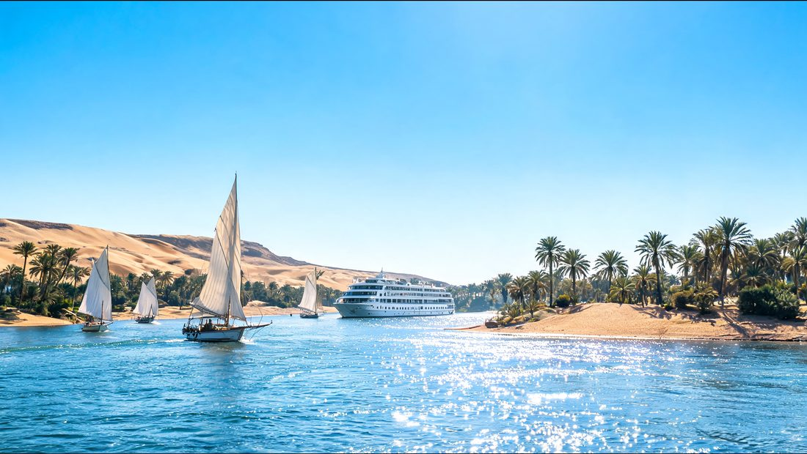

Saraybosna ve Mostar Gezi Rehberi: Bosna Hersek'te Görülecek Yerler
Başçarşı, Gazi Hüsrev Bey Camii, Mostar Köprüsü ve Blagay Tekkesi: Bosna Hersek turunda görülecek yerler ve gezi öncesi pratik notlar.
Devamını oku →
Güneydoğu Asya'nın dört ülkesini tek yolculukta birleştiren Hindiçin rotası, kireçtaşı adalarla dolu bir körfezden dev tapınak kentlerine, Budist manastırlarından hareketli metropollere uzanır. Bu rehberde Vietnam, Kamboçya, Laos ve Tayland turunun başlıca duraklarını derledik.
Vietnam'ın başkenti Hanoi, dar sokaklı Eski Mahallesi, Hoan Kiem Gölü ve Fransız sömürge döneminden kalma binalarıyla tanınır. Şehrin kuzeydoğusundaki Ha Long Körfezi, denizden yükselen yüzlerce kireçtaşı ada ve kayalığıyla UNESCO Dünya Mirası Listesi'ndedir. Körfez genellikle tekneyle gezilir; adaların arasındaki mağaralar ve sakin koylar rotanın en akılda kalan anlarındandır.
Ülkenin güneyindeki Ho Chi Minh (eski adıyla Saygon), Vietnam'ın en büyük şehri ve ticaret merkezidir. Hareketli caddeleri, çarşıları ve sömürge dönemi yapılarıyla Hanoi'den farklı bir enerji sunar.
Siem Reap, Khmer İmparatorluğu'nun başkenti olan Angkor'un kapısıdır. 12. yüzyılda inşa edilen Angkor Wat, dünyanın en büyük dinî yapılarından biridir ve Kamboçya bayrağında da yer alır. Taş yüzleriyle Bayon Tapınağı ve ağaç köklerinin sardığı Ta Prohm, Angkor bölgesinin diğer ünlü yapılarıdır. Angkor Wat'ı gün doğumunda izlemek pek çok gezginin listesindedir.
Mekong Nehri kıyısındaki Luang Prabang, Budist tapınakları ve geleneksel Lao mimarisiyle UNESCO Dünya Mirası Listesi'ndedir. Şehrin en bilinen geleneklerinden biri, sabahın erken saatlerinde turuncu cüppeli rahiplerin sokaklarda sadaka topladığı törendir. Akşamları kurulan gece pazarı da el işi ürünleriyle ilgi çeker.
Tayland'ın başkenti Bangkok, altın süslemeli tapınakları ve kanallarıyla bilinir. Büyük Saray (Grand Palace), dev yatan Buda heykeliyle Wat Pho ve Chao Phraya Nehri kıyısındaki Wat Arun başlıca duraklardır. Şehrin sokak lezzetleri ve pazarları da gezinin önemli bir parçasıdır.
Fas Tur'un Vietnam, Kamboçya, Laos ve Tayland turu Hanoi, Ha Long Körfezi, Ho Chi Minh, Siem Reap, Luang Prabang ve Bangkok'u kapsar. Kalkış tarihi için Tur Takvimi'ne bakabilirsiniz.
Vietnam, Kamboçya, Laos ve Tayland. Turumuzun güzergâhında Hanoi, Ha Long Körfezi, Ho Chi Minh, Siem Reap, Luang Prabang ve Bangkok yer alır.
Angkor Wat, Khmer İmparatorluğu döneminde 12. yüzyılda inşa edildi.
Denizden yükselen yüzlerce kireçtaşı ada ve kayalığıyla eşsiz bir manzara oluşturur; UNESCO Dünya Mirası Listesi'ndedir.
Omuz ve dizleri kapatan kıyafet giyilmeli, tapınak içinde ayakkabı çıkarılmalı ve sessiz olunmalıdır.
Başçarşı, Gazi Hüsrev Bey Camii, Mostar Köprüsü ve Blagay Tekkesi: Bosna Hersek turunda görülecek yerler ve gezi öncesi pratik notlar.

Kayaya oyulmuş şehir Petra, kızıl çöl Wadi Rum, Lut Gölü ve Ceraş: Ürdün turunun başlıca durakları ve bilmeniz gerekenler.

Gize Piramitleri, Karnak, Krallar Vadisi, Edfu, Kom Ombo ve Aswan: Nil cruise ile Büyük Mısır turunda görülecek yerler.